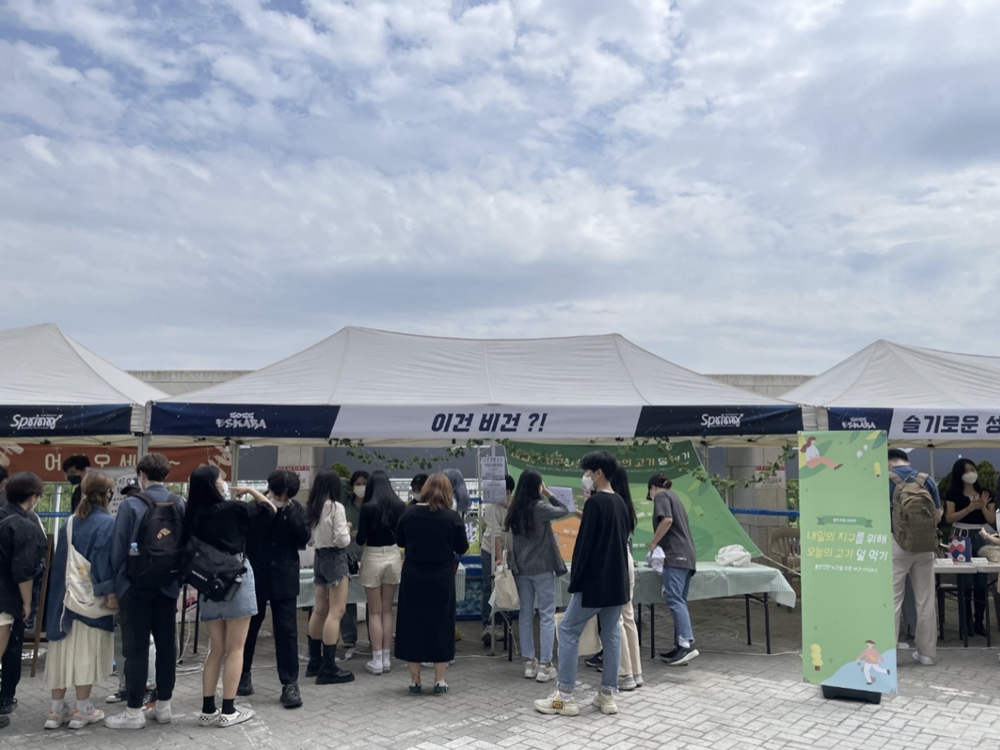

PROCESS
빠른 의사소통과 실행을 위해 COMET은 두 팀으로 나뉘어 프로젝트를 진행했습니다.
‘비건부스’를 최종 프로젝트 결과물로 선정한 팀1은 총 10세션을 통해 하나의 프로젝트를 완성시켰습니다.
팀1 일정요약
| 세션 | 내용 |
|---|---|
| 1~2 | 주제 선정(1) “시의성과 긴급성이 모두 높은, 우리가 접근할 수 있는 문제가 무엇일까?” |
| 3~4 | 주제 선정(2) “문제를 해결하기 위해서는 무엇이 필요할까?” |
| 5~7 | 프로젝트 실행 준비 |
| 8~9 | 프로젝트 실행 |
| 10 | 최종보고 “이번 프로젝트를 통해 무엇을 해냈으며, 어떤 점이 부족했을까?” |
“일단 무엇인가를 생산한다는 점에서 친환경 기업이란 존재할 수 없습니다”
이 글을 쓰는 운영진이 대학수업에서 들은 말입니다. 비건 시장이 점점 커지면서 자연스럽게 비건 상품이 생산되기 시작했습니다. 고기 생산을 위해 발생하는 환경오염을 줄여나가자는 취지에서 많은 사람들이 비건을 실천하고 있지만, 교수님의 말씀처럼 추가적인 상품을 생산한다는 점에서 비건 상품들이 일차적으로 친환경적이지 않을 수 있습니다.
하지만 생산된 비건 상품들은 기존 상품의 대체재가 되면서 친환경적인 상품이 됩니다. 어차피 대부분의 사람들은 환경을 위해 많은 것을 포기하지 못합니다. 비건을 실천해야한다는 것은 알지만 여전히 맛있는 케이크도 먹어야 하고, 가끔 고기도 먹어야 합니다. 동물 실험을 한 화장품이더라도 유명인의 사용 후기를 들으면 구매하게 됩니다. 하지만 이런 사람이 정말 맛있지만 동물성 재료를 사용하지 않은 케이크를 접하게 된다면 어떨까요? 기꺼이 동물성 재료를 활용한 케이크 대신 비건 케이크를 소비할 것입니다. 환경을 위해 작은 실천을 했다는 뿌듯함을 느끼면서 여전히 케이크가 주는 행복감은 누릴 수 있으니까요. 우리는 이미 시장에 논비건 식품들을 훌륭하게 대체할 수 있는 비건 식품들이 많이 나와있다고 생각했습니다. 일상 속에서 논비건 식품들을 비건 식품들로 천천히 대체해가는 것. 이것이 현재의 상황 속에서 사람들에게 제안할 수 있는 환경운동의 정도라고 생각했습니다. 의견이 모인 후, 우리가 고민해야할 것은 “어떻게 현재 나와있는 비건 식품들을 알릴 수 있지?”였습니다.

팀1은 학우들의 관심이 모이는 축제 때, 맛있는 비건 식품들을 무료로 시식하는 부스를 여는 프로젝트를 준비하기로 했습니다. 총 5개 브랜드의 협찬을 받아 비건 스콘, 비건 치킨, 비건 쿠키 등 다양한 비건 식품군을 무료로 학생들에게 시식할 수 있게 했습니다. 현장 시식 뿐 아니라 집에 가져가서 먹어볼 수 있도록, 비건 퀴즈를 푸는 방문자들에게 손에 한가득 비건 간식을 들려 보냈습니다. 첫 비건 경험을 부스 밖에서도 이어나갈 수 있도록 인스타그램 챌린지도 동시에 운영하고, 맛있는 비건 식품 브랜드들이 더 홍보될 수 있도록 인스타그램 태그 챌린지도 이어나갔습니다.
팀1의 부스에 방문한 사람들은 대부분 비건 식품을 처음 접해본 사람들이었습니다. 기대했던 것보다 더 좋은 반응을 얻었지만, 가장 기억에 남는 방문자의 말이 있습니다.
“편견을 갖고 먹어도 맛있는 맛이다.”비건 식품은 맛이 없을 거라는 편견을 갖고 시도조차 하지 않았던 사람들이 우리 부스를 통해 편견을 버리고, 훗날 비건 식품을 만났을 때 기꺼이 시도했으면 좋겠다는 마음이 전달된 순간이었습니다. 첫 비건 경험을 팀1의 부스에서 긍정적으로 형성한 수많은 방문자들이 다른 곳에 가서 비건 식품을 소비하고자 내린 구매결정이 하나하나 모여 비건 소비자운동에 약간의 보탬이 되어 비건 시장이 더욱 커지고, 비건 식품들에 대한 접근성이 높아지는 선순환을 그리기를 기대해봅니다.
